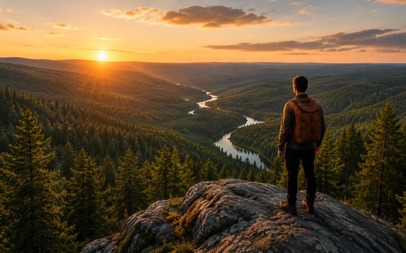

Vandra
Följ leder genom skog och över öppna höjder. Här finns vandringar för både korta utflykter och längre dagar ute i naturen.


Upptäck vidsträckta skogar, stilla sjöar och storslagna vyer. I Norrgläntan finns plats för både äventyr och avkoppling.
Upptäck NorrgläntanI Norrgläntan är naturen alltid nära. Här möts skogar, sjöar och berg i ett landskap som bjuder in till upplevelser året runt. Vandra längs slingrande leder, ta dig ut på vattnet eller hitta en lugn plats och njut av omgivningarna.
Oavsett om du söker äventyr eller bara vill komma bort en stund finns det alltid något nytt att upptäcka.
Följ leder genom skog och över öppna höjder. Här finns vandringar för både korta utflykter och längre dagar ute i naturen.

Ta dig ut på Norrgläntans sjöar och upptäck landskapet från vattnet. Hitta din egen vik eller stanna till vid någon av rastplatserna längs stranden.

Ibland är det bästa äventyret det som inte är planerat. Utforska skogar och utsiktsplatser och upptäck dina egna favoriter längs vägen.
Norrgläntan har något att erbjuda under hela året. Här hittar du boenden nära naturen och bra utgångspunkter för områdets aktiviteter. Börja planera ditt besök och hitta det som passar dig.
Planera ditt besök